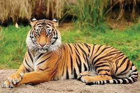

Royal Bengal Tiger

|
Royal Bengal Tiger, is the largest, fiercest, and most powerful member of the Big Cat family in India.
If you want to understand How Tigers look like? What do they eat? How powerful they are? and Where to find them? then keep reading to find the details.
Royal Bengal Tigers are also known as Indian Tiger and Bengal Tiger. They constitute a large population of tiger families in the world. The Bengal tiger is the National animal of India and is found mostly in India, China, Bhutan, Bangladesh, and Burma.
Back to the top
|